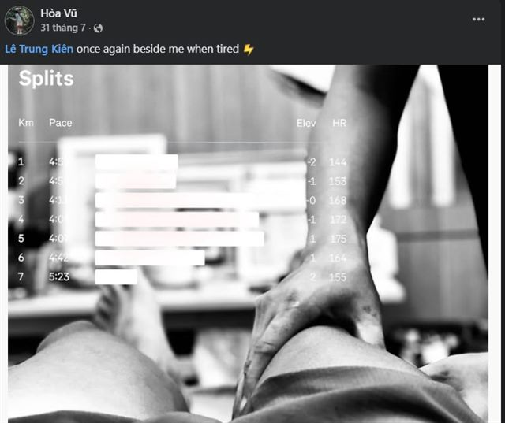

Y học cổ truyền · Y tế thể thao · Diễn giả sức khỏe
Đồng hành sức khỏe, từ phòng khám đến sân đấu
Mình là bác sĩ Lê Trung Kiên — Thạc sĩ Y học cổ truyền, đồng thời là người đồng hành y tế tại các sự kiện thể thao và diễn giả sức khỏe. Dù bạn cần điều trị đau cơ xương khớp, tìm bác sĩ đồng hành tại giải đấu, hay mời chuyên gia chia sẻ tại sự kiện — mình đều có thể hỗ trợ.
Dịch vụ
Mình có thể hỗ trợ bạn
Kinh nghiệm & học vấn
Nền tảng chuyên môn
Công tác
- Bác sĩ, Bệnh viện Đa khoa Y học cổ truyền Hà Nội (2020 – nay)
- Thư ký Ban chủ nhiệm Chuyên khoa đầu ngành Y học cổ truyền — Sở Y tế Hà Nội
- Giảng viên thỉnh giảng chuyên ngành Y học cổ truyền tại các trường Cao đẳng Y Dược
Học vấn
- Thạc sĩ Y học cổ truyền — Đại học Y Hà Nội (2025)
- Bác sĩ Y học cổ truyền — Học viện Y Dược học cổ truyền Việt Nam (2018)
- Chứng chỉ Sư phạm Y học — Đại học Y Hà Nội (2025)
Bệnh nhân nói gì
Chia sẻ từ bệnh nhân


Ghi nhận & báo chí